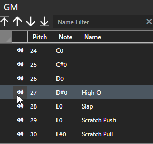

Plug-in
Edita o mapa de bateria.
Editar mapa de bateria
Definir plug-in e informações do kit.

- Selecione um plugin na lista de plugins. Adicione o plugin se ele não estiver presente.
- Selecione um kit na lista de kits. Se você não tiver um kit, adicione um.
- Configure o mapa usando a lista de arremessos.
Lista de tons
Define as informações do mapa de bateria definidas em VST (fonte de som de bateria).

-
Nome
- Insira o nome do pitch. Se estiver em branco, o tom não será definido.
-
Articulação
- Abra a tela de seleção de articulação no botão de pesquisa e selecione a articulação apropriada.
-
Separador
- Selecione o apropriado na caixa de combinação. Filtro
Filtra por nome de afinação e nome de articulação.

Você pode especificar um curinga usando um asterisco (*).
- Se não for especificado, corresponda exatamente
- Se colocado no início da palavra-chave, corresponda ao sufixo
- Se colocado no final da palavra-chave, corresponda ao início
- Se colocado antes ou depois da palavra-chave, corresponda parcialmente
Classificar
- Insira cada item da linha de argumento aplicável.
-
Você pode alterar a ordem de classificação clicando no cabeçalho da coluna.
- O primeiro clique irá classificá-lo em ordem crescente, o segundo irá classificá-lo em ordem decrescente e o terceiro irá retorná-lo ao estado inicial.
- Algumas funções de edição são limitadas no estado classificado. Se você quiser editá-lo, retorne-o ao estado inicial.
Verificação de som

Clicar no ícone do alto-falante em cada linha da lista de tons enviará mensagens de ativação/desativação de notas daquela linha para a porta MIDI.
Menu de contexto
Exibido clicando com o botão direito na lista de pitches.

Mapa de articulação
Exibido quando chamado a partir do menu de contexto. Aqui você pode ver quais notas estão atribuídas a quais articulações.

Exibe a afinação associada à articulação.
Os itens marcados na subcoluna são tons interpolados automaticamente.
Opções de plug-in

-
Velocidade de verificação de som
- Define o valor de velocidade da nota que é emitido quando o botão de verificação de som é pressionado. Entrada
-
fixa Habilita
- MIDI em afinação fixa.
-
Dispositivo de entrada MIDI
- Selecione a porta à qual o teclado MIDI está conectado. Se não for necessário, selecione em branco. Se disponível, será exibido “Conectado”; se não estiver disponível, "Not Connected" será exibido.
-
MIDI In Fixed Pitch
-
Especifica a afinação das mensagens de ativação/desativação de notas do teclado MIDI a serem aceitas.
Se você especificar este valor e ativar "Entrada Fixa", A entrada do teclado MIDI é convertida na mensagem de ativação/desativação da nota selecionada na lista de afinações e na saída.
-
Especifica a afinação das mensagens de ativação/desativação de notas do teclado MIDI a serem aceitas.
-
Dispositivo de saída MIDI
- Selecione o destino de saída da mensagem MIDI. Se disponível, será exibido “Conectado”; se não estiver disponível, "Not Connected" será exibido.